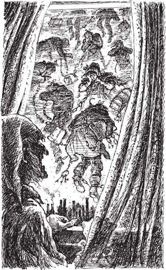

4
Listen to Part 1:

Tin tức cho Scrooge
‘C– Bạn ngồi xuống được không?’ Scrooge hỏi hồn ma. Lúc này, Scrooge có chút sợ hãi.
‘Có chứ, tôi ngồi được,’ hồn ma đáp lại và ngồi xuống đối diện Scrooge.
‘Ông không tin tôi ở đây thật chứ gì?’ hồn ma nói.
Scrooge lắc đầu. ‘Không, tôi không tin,’ ông ta nói.
Hồn ma hét lớn rồi khua mạnh những sợi xích. Sau đó, nó gỡ tấm vải trắng ra và há hốc mồm.
Scrooge lúc này đã rất sợ hãi. Ông ta quỳ gối xuống sàn trước hồn ma của Marley.
‘T– Tại sao anh lại tới gặp tôi? Tại sao một người đã chết lại có mặt ở trần gian thế này?’ Scrooge hỏi.
‘Khi còn sống, mọi người phải đi ra ngoài thế giới và giúp đỡ người khác,’ hồn ma đáp lại. ‘Nhưng một số người lại không làm vậy. Họ không trò chuyện hay quan tâm đến người khác. Vì vậy, khi những người này chết đi, họ sẽ trở thành ma. Họ phải đi lang thang khắp thế gian mãi mãi khi đã chết.
‘Những người đã chết này nhìn thấy những điều khủng khiếp trong khi họ đi lại, nhưng họ không thể làm gì để giúp đỡ bất kỳ ai,’ hồn ma tiếp tục nói. ‘Mọi người chỉ có thể giúp đỡ lẫn nhau khi họ còn sống.’
Listen to Part 2:
Hồn ma lại khua những sợi xích, tạo nên tiếng động khủng khiếp.
Scrooge vẫn còn quỳ gối. Giọng ông ta run lên vì sợ hãi khi nói. ‘Tại sao lại có sợi xích trên người anh vậy?’ ông ta hỏi.
‘Tôi đã tự tạo ra những sợi xích này khi tôi còn sống,’ hồn ma của Marley nói. ‘Tôi tàn nhẫn và bất nhân. Thế nên những sợi xích này ngày càng dài ra. Tôi không chịu cho người ta vay tiền. Thế nên những sợi xích này ngày càng nặng thêm. Anh cũng có một sợi xích dài và nặng như vậy đấy.’
Scrooge nhanh chóng nhìn quanh. Ông ta lo lắng. Liệu trên người mình có một sợi xích như vậy không? Nhưng ông ta không nhìn thấy gì cả. Scrooge ngước nhìn hồn ma.
‘Hãy tử tế với tôi, Jacob ạ,’ Scrooge nói. ‘Hãy an ủi tôi đi.’
‘Tôi không thể an ủi anh được. Tôi chẳng còn gì để an ủi nữa,’ hồn ma nói. ‘Tôi đã đi lang thang suốt bảy năm trời. Tôi đã không tốt bụng hay giúp đỡ ai khi tôi còn sống. Bây giờ tôi chẳng còn có thể giúp đỡ ai được nữa. Tôi phải đi lang thang mãi mãi và chứng kiến những điều khủng khiếp.’
‘Nhưng anh từng là một doanh nhân giỏi mà,’ Scrooge nói. ‘Anh kiếm được nhiều tiền lắm.’
Hồn ma thốt lên tiếng kêu to. ‘Ôi, không! Tôi đã sai khi quan tâm quá nhiều tới tiền bạc. Sai lầm lớn! Tôi đã không tử tế với mọi người. Tôi đã không giúp đỡ họ.’
Rồi nó lại nói tiếp. ‘Bây giờ, Giáng sinh là thời điểm tồi tệ nhất trong năm đối với tôi. Tại sao tôi lại không giúp đỡ mọi người vào dịp Giáng sinh khi tôi còn sống?’
Scrooge lo lắng lắm. Ông ta giống như Jacob Marley vậy. Ông ta không giúp đỡ mọi người. Ông ta không tin vào Giáng sinh. Liệu ông ta có phải cũng sẽ giống như hồn ma của Marley sau khi chết?
Listen to Part 3:
‘Tôi phải đi rồi,’ hồn ma đột ngột lên tiếng. ‘Hãy lắng nghe tôi. Tôi muốn nói cho anh biết tại sao tôi lại ở đây.’
‘Vâng, vâng, tôi sẽ lắng nghe anh,’ Scrooge đáp lại, ‘nhưng hãy tử tế với tôi, Jacob ạ.’
‘Tôi chỉ có thể tới thăm anh một lần duy nhất thôi, Ebenezer ạ,’ hồn ma của Marley nói. ‘Tôi tới đây để cố gắng giúp đỡ anh. Có lẽ anh sẽ học được cách trở nên tốt bụng và tử tế. Khi đó, anh sẽ không phải đi lang thang khắp thế gian mãi mãi sau khi chết. Anh sẽ không phải chứng kiến những điều khủng khiếp.’
‘Cảm ơn anh, Jacob. Anh luôn là một người bạn tốt,’ Scrooge nói.
‘Sẽ có ba hồn ma tới gặp anh,’ hồn ma của Marley nói.
‘Ôi, không!’ Scrooge lên tiếng lo lắng. ‘Hãy bảo chúng đừng đến. Tôi không muốn gặp chúng.’
‘Anh không thể được cứu nếu chúng không tới,’ hồn ma của Marley đáp lại. ‘Hồn ma đầu tiên sẽ tới lúc một giờ sáng mai. Hồn ma thứ hai sẽ tới vào một giờ sáng đêm tiếp theo. Hồn ma thứ ba sẽ tới vào nửa đêm ngày hôm sau. Tôi sẽ không gặp lại anh đâu.’
Hồn ma quấn tấm vải trắng quanh mặt và cằm mình. Rồi nó nhấc những sợi xích lên và tiến về phía cửa sổ.
Cửa sổ mở ra từ từ khi hồn ma của Marley tiến đến. Scrooge đi theo hồn ma và dừng lại bên cửa sổ. Sau đó, hồn ma bước ra ngoài cửa sổ và biến mất.
Scrooge nhìn ra ngoài cửa sổ. Bầu trời đầy những hồn ma. Có rất nhiều hồn ma là những người mà Scrooge từng quen biết. Tất cả chúng đều đeo những sợi xích nặng và đang khóc than, hét lên.
Listen to Part 4:
Scrooge đóng sầm cửa sổ lại. Đột nhiên, ông ta cảm thấy rất mệt mỏi. Bây giờ đã là hai giờ sáng. Ông ta kéo rèm quanh giường rồi nằm xuống. Ông ta cố nói ‘Vớ vẩn!’ nhưng ông ta quá mệt rồi. Ông ta chỉ kịp thốt ra ‘Vớ …’ rồi ngủ thiếp đi.

Scrooge nhìn ra ngoài cửa sổ. Bầu trời đầy những hồn ma.
Mục lục
- Trang bìa
- Nội dung
- Ghi chú về tác giả
- Ghi chú về cuộc sống ở Anh vào thế kỷ XIX
- 1 Ebenezer Scrooge
- 2 Khách thăm nhà Scrooge
- 3 Bóng ma Marley
- 4 Tin tức cho Scrooge
- 5 Bóng ma Giáng sinh quá khứ
- 6 Scrooge thời thơ ấu
- 7 Giáng sinh cùng nhà Fezziwigs
- 8 Cô gái yêu Scrooge
- 9 Bóng ma Giáng sinh hiện tại
- 10 Giáng sinh cùng nhà Cratchit
- 11 Giáng sinh vui vẻ khắp nơi
- 12 Bóng ma Giáng sinh tương lai
- 13 Tiny Tim
- 14 Người đàn ông đã thay đổi
- Điểm cần hiểu
- Trang bản quyền